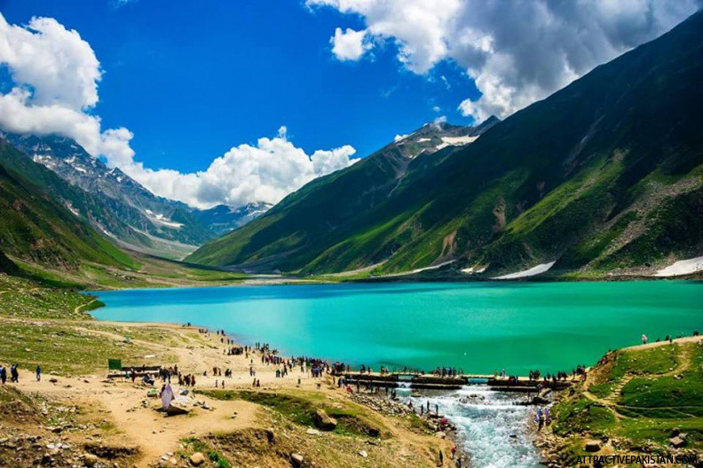

Saiful Muluk (Urdu: جھیل سیف الملوک) is a mountainous lake located at the northern end of the Kaghan Valley, near the town of Naran in the Saiful Muluk National Park. At an elevation of 3,224 m (10,578 feet) above sea level, the lake is located above the tree line, and is one of the highest lakes in Pakistan.
Location The road to the lake traverses the mountains of the Kaghan Valley Saiful Muluk is located in the Mansehra district of Khyber Pakhtunkhwa, about 9 kilometres (5.6 mi) north of Naran, in the northern part of Kaghan Valley. Malika Parbat, the highest peak in the valley is near the lake. The lake is accessible from the nearby town of Naran during the summer season but access during winter is limited, as heavy snowfall and landslides threaten to cutoff the lake from other regions.

Ansoo Lake, is a tear-shaped lake located in Kaghan Valley in Mansehra District of Khyber Pakhtunkhwa the province of Pakistan. It is located at an elevation of 4,245 metres above sea level and considered one of the highest lakes of the Himalaya Range.

A place where you are compelled to stop by and spend an hour if you are planning to visit northern areas. Heights are always thrilling if you are fond of travelling and I believe if we have same taste in exploring and travelling then this place should be in your timeline list.

Mansehra Shiv Temple is one of the oldest Hindu temple in Pakistan that is still in existence. The temple is at least 2000 to 3000 years old. The temple is situated in Chitti Gatti, 15 kilometres from Mansehra in Khyber Pakhtunkhwa in Pakistan

The edicts are inscribed on an outcrop of a small rocky mountain outside the city of Mansehra in Khyber Pakhtunkhwa province of Pakistan. The site is located near to the Karakoram Highway on the ancient Silk Route. The archeological city of Taxila is located in south and Abbottabad lies very near to the east of the site.
This Library is situated in the middle of Mansehra City and it is one of the Oldest Buildings This was actually a HINDU Temple which is now converted into a public library